GIS Canvas Scripting Guide
This document explains how to write and run Behaviour Scripts inside the Scenario Editor and Runtime Editor. It focuses on Canvas and GIS-related scripting functions such as adding shapes, switching maps, and generating PDF reports.
Script Entry Point
Every behaviour script must define a main function.
void main(ScriptEngine@ e)
{
// Script logic here
}
Setting City Context
Before drawing Circle and Rectangle object, you should define the city context.
Syntax
e.useCity("CityName");
Example
void main(ScriptEngine@ e)
{
e.useCity("Bhopal");
}
Explanation
Loads GIS and map data for the specified city.
Canvas objects are plotted within this context.
Adding a Circle
The canvasAddCircle function draws a circular shape on the canvas.
Syntax
e.canvasAddCircle(string name, float radius);
Parameters
name– Unique identifier for the circle.radius– Radius of the circle.
Example
void main(ScriptEngine@ e)
{
e.useCity("Bhopal");
// Add circle on canvas
e.canvasAddCircle("Circle", 10.0);
// Generate PDF report
e.generatePDFReport("GIS_Report_circle.pdf");
}
Explanation
Creates a circular GIS overlay.
Useful for range, coverage, or zone visualization.
{kind=link}
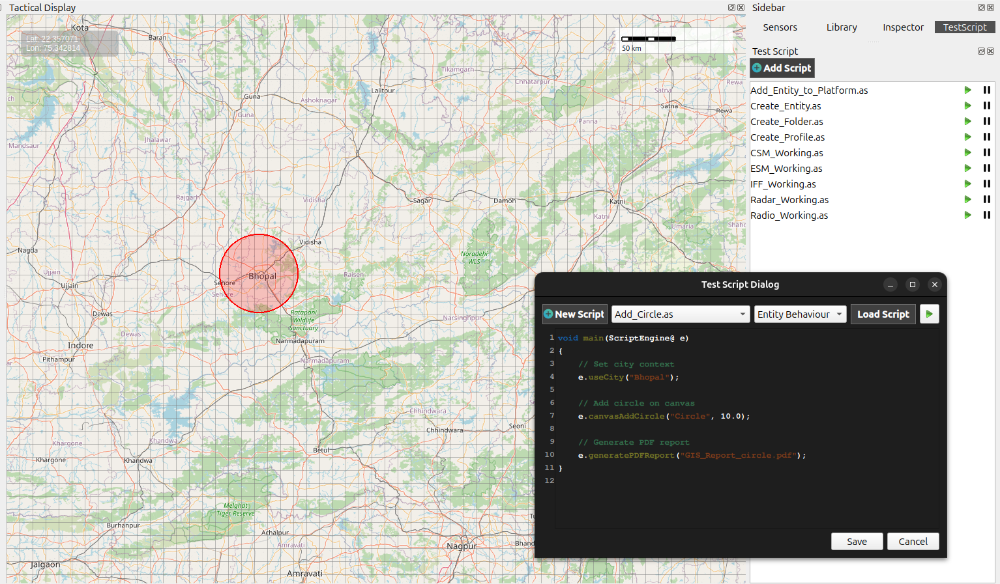
Adding a Rectangle
Rectangles are commonly used to represent restricted or operational zones.
Syntax
e.canvasAddRectangle(string name, float width, float height);
Example
void main(ScriptEngine@ e)
{
e.useCity("Bhopal");
// Add rectangle on canvas
e.canvasAddRectangle("Restricted_Zone", 20.0, 10.0);
e.generatePDFReport("GIS_Report_rectangle.pdf");
}
Explanation
Draws a rectangle on the canvas.
Width and height control the rectangle size.
{kind=link}
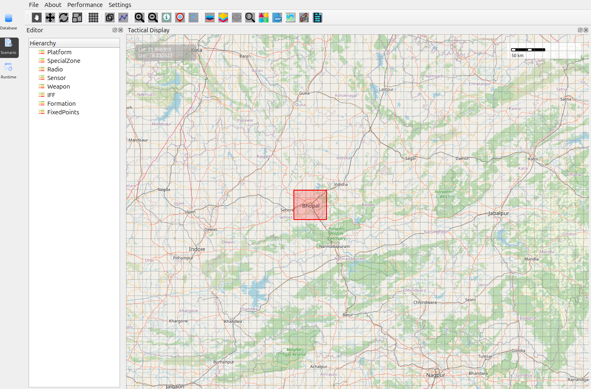
Adding a Polygon
Polygons allow drawing custom geographic regions using longitude and latitude.
Syntax
e.canvasAddPolygon(string name, array<string> points);
Point Format
Each point must be provided as:
"Longitude, Latitude"
Example: Polygon over India
void main(ScriptEngine@ e)
{
Print("Plotting Polygon over India ##");
array<string> indiaPoints = {
"77.0, 30.0", // North
"78.11, 29.36", // East
"77.23, 29.10", // South
"76.64, 29.51", // West
"77.0, 30.0" // Closing point
};
e.canvasAddPolygon("India_Strategic_Zone", indiaPoints);
e.generatePDFReport("GIS_Report_Polygon.pdf");
}
Explanation
Connects all points in sequence.
The last point closes the polygon.
Useful for borders, regions, and mission zones.
{kind=link}
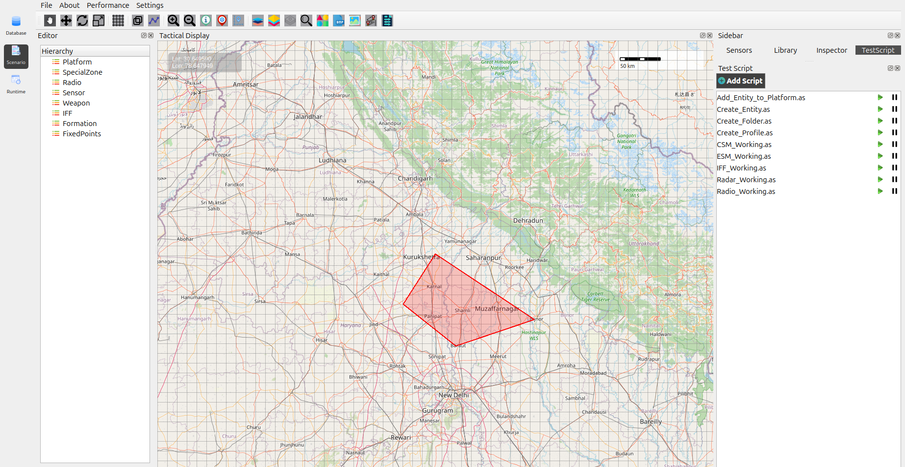
Drawing a Line
Lines can be used to represent paths, routes, or connections between locations.
Syntax
e.canvasStartLine();
e.canvasAddLinePoint(double longitude, double latitude);
e.canvasFinishLine();
Example
void main(ScriptEngine@ e)
{
// Start line drawing
e.canvasStartLine();
// Add line points
e.canvasAddLinePoint(73.38, 28.08);
e.canvasAddLinePoint(75.79, 26.99);
// Finish line
e.canvasFinishLine();
// Generate PDF report
e.generatePDFReport("line_pdf.pdf");
}
Explanation
canvasStartLine()– Begins the line drawing process.canvasAddLinePoint()– Adds a coordinate point to the line.canvasFinishLine()– Completes the line and renders it on the canvas.
{kind=link}
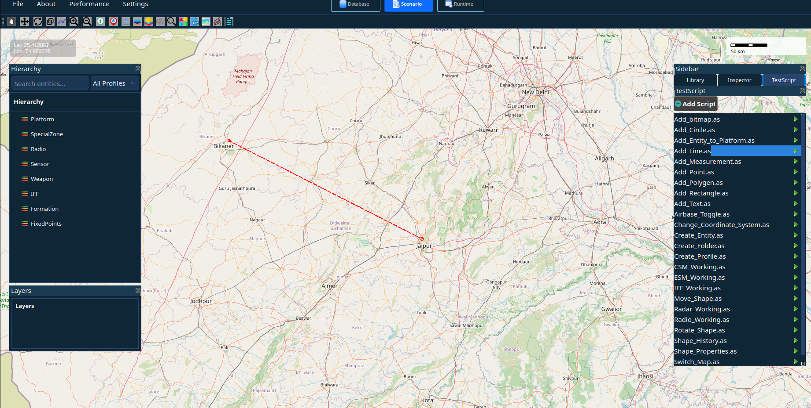
Adding a Point
Points are used to mark specific locations on the map such as landmarks, assets, or important geographic positions.
Syntax
e.canvasAddPoint(string name, double longitude, double latitude);
Example
void main(ScriptEngine@ e)
{
// Plot a point on the canvas
e.canvasAddPoint("Point", 78.34, 28.59);
Print("Landmark Point marked.");
// Wait for 2 seconds
e.sleep(2000);
// Generate PDF report
e.generatePDFReport("Point_GIS_Report.pdf");
}
Explanation
canvasAddPoint()– Adds a point marker on the canvas.name– Identifier for the point.longitude, latitude– Geographic coordinates where the point will be placed.
{kind=link}
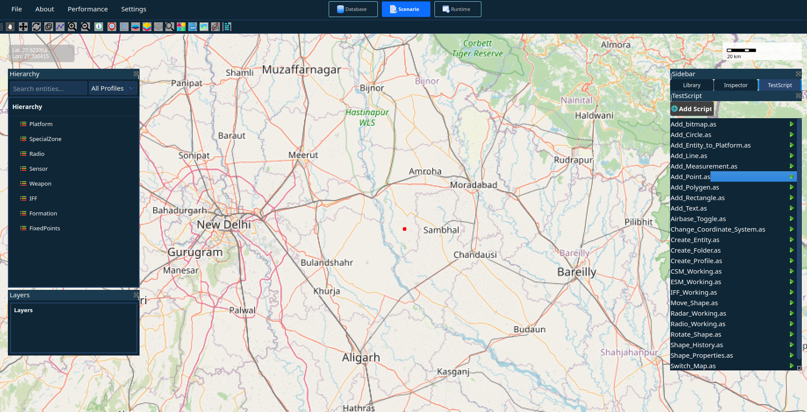
Toggling Airbase Layer
The airbase layer can be enabled to display airbase locations on the map.
Syntax
e.canvasToggleAirbases();
Example
void main(ScriptEngine@ e)
{
// Enable Airbase Layer
e.canvasToggleAirbases();
// Generate Auto Report
e.generatePDFReport("Airbase_India_Report.pdf");
}
Explanation
canvasToggleAirbases()– Enables or disables the airbase layer on the canvas.Displays airbase locations available in the GIS dataset.
{kind=link}
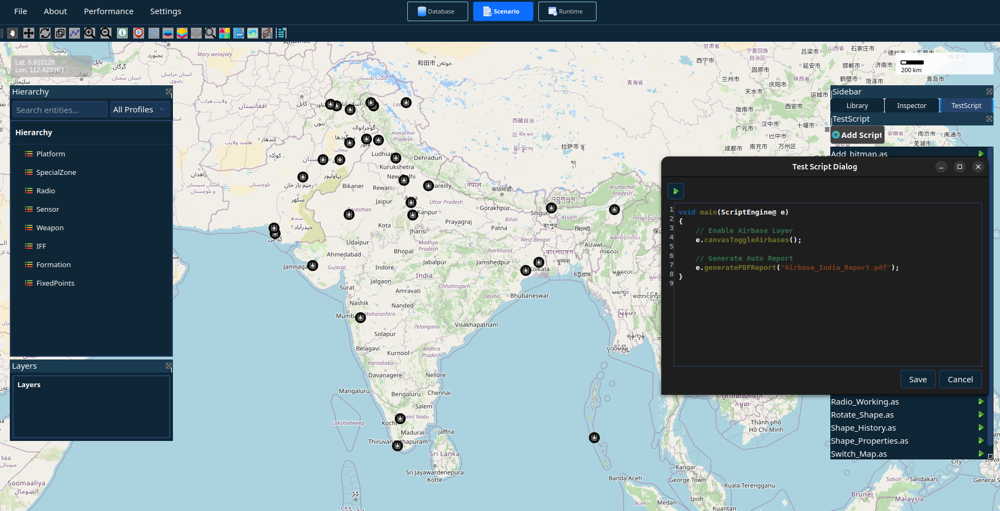
Switching Map Type
The canvas can switch between different map views.
Syntax
e.canvasSwitchMap(string mapType);
Example: Terrain Map
void main(ScriptEngine@ e)
{
// Switch to terrain view
e.canvasSwitchMap("tarrine");
e.generatePDFReport("tarrine_map.pdf");
}
Explanation
Changes the map to terrain/elevation view.
Useful for topographical analysis.
{kind=link}
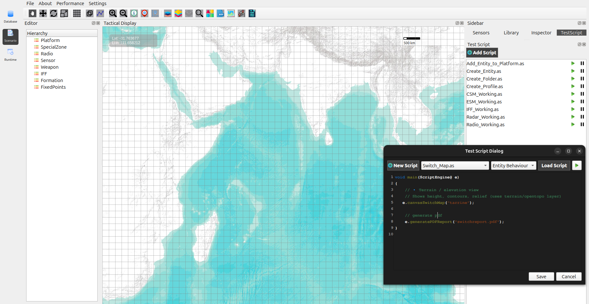
Placing a Bitmap on the Canvas
Bitmaps (icons or symbols) can be placed on the map using longitude and latitude.
Syntax
e.onBitmapSelected(string bitmapName, double longitude, double latitude);
Example
void main(ScriptEngine@ e)
{
// Bitmap location
double lon = 78.02232;
double lat = 27.14927;
// Place bitmap on canvas
e.onBitmapSelected("Hospital", lon, lat);
// Generate PDF report
e.generatePDFReport("bitmap_Report.pdf");
}
Explanation
Places a predefined bitmap icon on the map.
Uses geographic coordinates(longitude, latitude)
Useful for hospitals, trees, schools, or assets.
{kind=link}
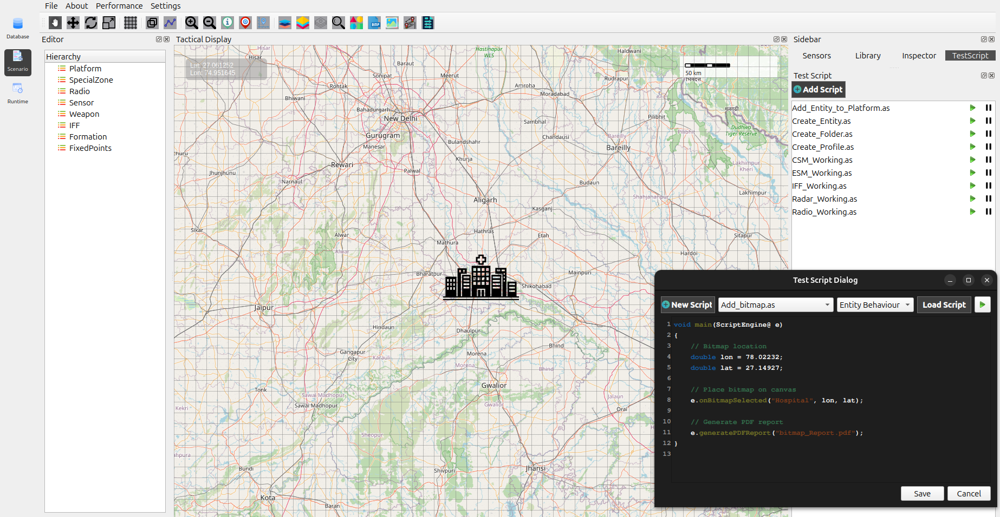
UTM Coordinate System
Example
void main(ScriptEngine@ e)
{
// Auto UTM (zone auto-detected from location)
e.switchCoordinateSystem("utm");
// Screenshot and PDF generated
e.generatePDFReport("Map_Coordinate_System_Report_UTM.pdf");
}
Explanation
Automatically detects UTM zone
Useful for Geo-detic and MGRS coordinate.
{kind=link}
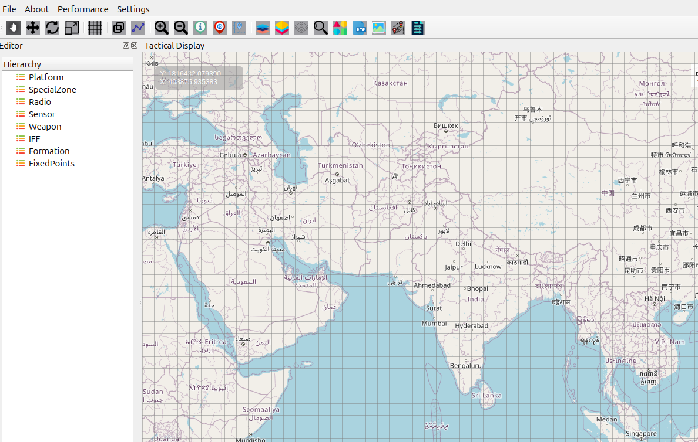
Moving a Shape on the Canvas
Shapes can be repositioned after creation.
Syntax
e.moveShape(string shapeId, double longitude, double latitude);
Viewing Shape History
The system maintains a movement history of shapes.
Example
void main(ScriptEngine@ e)
{
// City context
e.useCity("Bhopal");
// Add a circle
e.canvasAddCircle("Circle", 10.0);
// Move the newly created circle
e.moveShape("TempCircle_0", 75.8481, 22.7375);
e.sleep(3000); // wait for 3 seconds
// Show previous movement history
e.showShapeHistory("TempCircle_0");
// Generate PDF report
e.generatePDFReport("GIS_Report_History_Shown.pdf");
}
Explanation
Tracks previous positions of a shape
Useful for movement analysis and playback
History is visible both on canvas and in reports
{kind=link}
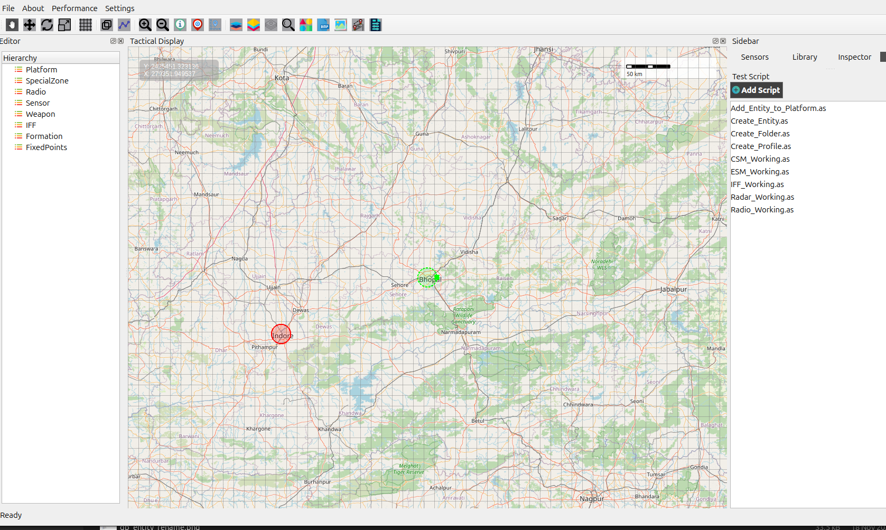
Generating PDF Report
Exports the current canvas view as a PDF file.
Syntax
e.generatePDFReport(string fileName);
Example
e.generatePDFReport("GIS_Final_Report.pdf");
Explanation
Captures all visible GIS objects
Useful for documentation and reporting
{kind=link}
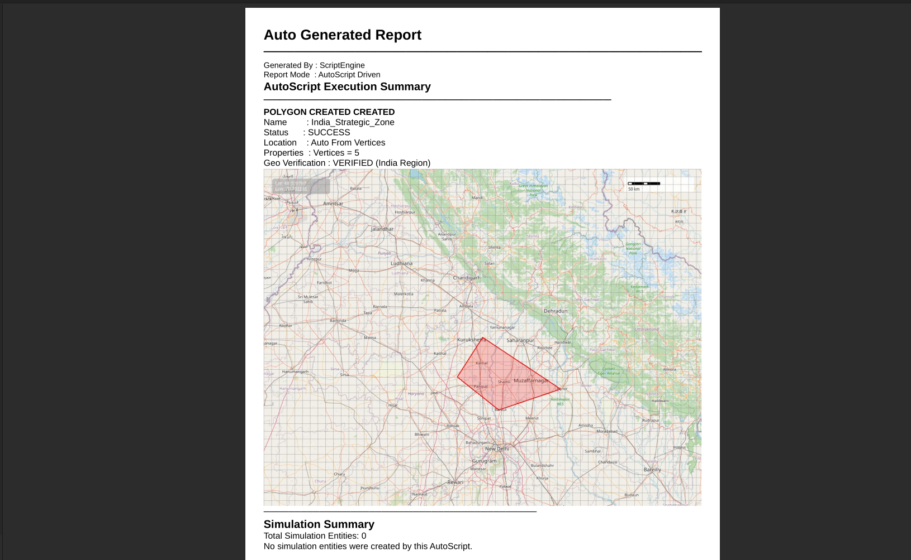